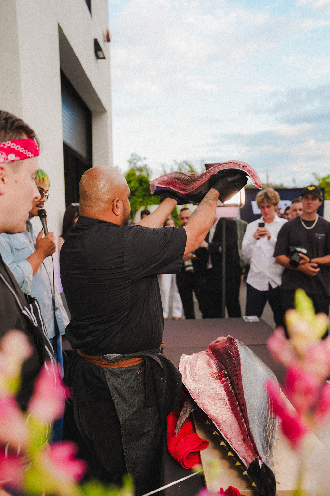

Private Events
Milestone dinners, donor evenings, and private-home hosting. The full ceremony brought to a venue you have already chosen.

01 / About
Otoro Club stages live bluefin ceremonies as private event programming in La Jolla and greater San Diego.
A whole bluefin is broken down by hand in the room over about forty minutes. Akami, chutoro, and otoro are portioned and served in sequence as they are cut. The itamae works the loin in front of the guests and names each cut as it comes off the frame. There is no back-of-house.
The ceremony is what the evening is built around. It decides where guests stand, when the room turns, what gets photographed, and what people are still talking about on the way out.
02 / The Experience
Each engagement runs about three hours in four movements, in the same order every time. The room and the headcount change. The sequence does not.
The bluefin is on the presentation table before anything is served. Guests arrive to it, walk past it, photograph it. Welcome pours.
The itamae opens the loin in front of the guests. Each cut is named as it is taken, in Japanese and English. Nothing is prepped out of sight.
Akami, then chutoro, then otoro, portioned and passed in sequence off the board. Hand rolls made to order. Sake and wine pairings optional.
A final family-style course and dessert. The frame stays on the table until the last guest leaves.

03 / Gallery
04 / Services
Wherever the room is, the fish, the itamae, the boards and the service come with it. Four formats it is built for. Anything past those is a conversation.
Milestone dinners, donor evenings, and private-home hosting. The full ceremony brought to a venue you have already chosen.
A live breakdown as the cocktail-hour centerpiece. Sashimi and hand rolls cut to order while the room is still standing.
Client dinners, brand activations, and team evenings that need something for the room to gather around.
Preferred-vendor relationships with hotels, clubs, and event spaces, and collaborations with resident chefs on recurring dates.
05 / Formats
Three engagement tiers, plus à la carte additions. The ceremony is the same at every scale. The room, the portioning, and the service change.
One table. The itamae works at arm’s length and the whole room is inside the breakdown.
A station format for a room that moves. Portions are cut and passed continuously through the engagement.
A whole bluefin as the centerpiece of a landmark evening, with staffing and service scaled to the venue.
À la carte additions sit alongside any tier. Base engagements start at $20,000.
06 / Instagram
07 / Enquire
Tell us the venue, the date, and the guest count. We will come back with what the ceremony looks like in that room.
reservations@otoroclub.com